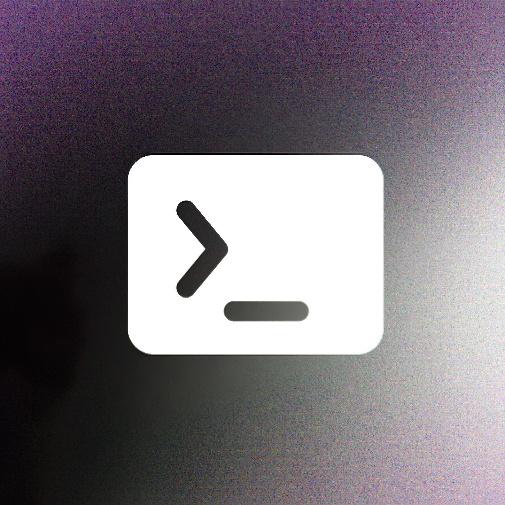
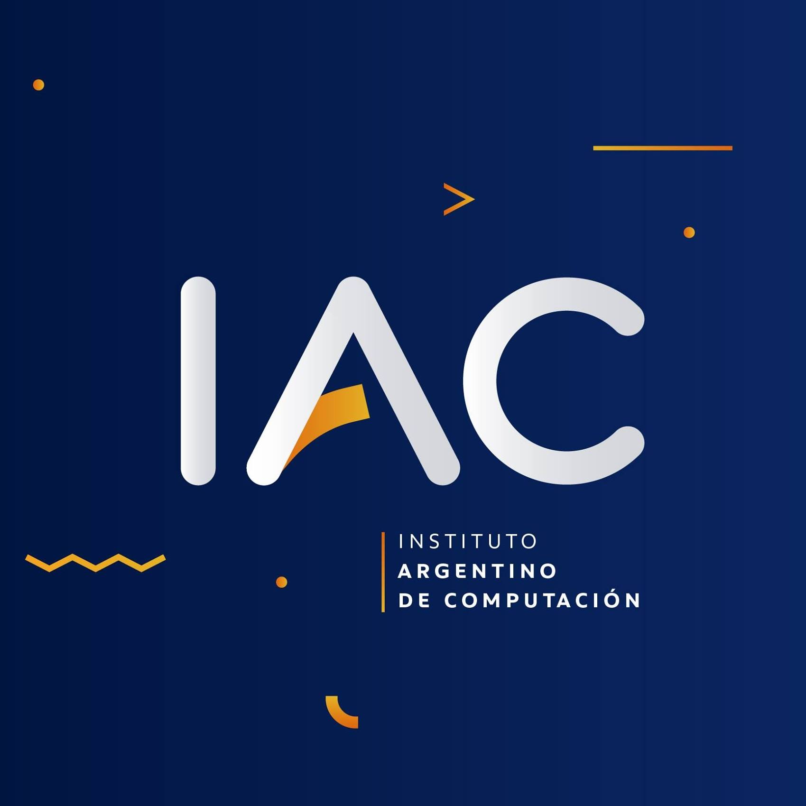

<div class="container-fluid gradient pb-5">
  <div class="row m-p-0">
    <div class="col-2 anim-1 rounded" [class.d-none]="screenWidth < 992"></div>
    <div [class.col-10]="screenWidth >= 992" [class.col]="screenWidth < 992">
        <h1 class="text-big text-end px-2 bg-1 color2 rounded-start">Educación</h1>

        <Section class="carousel mt-5">
            <div class="col-sm-4 px-2 py-4 text-end item">
                
                <h3 class="text-big">Desarrollador Web Full Stack</h3>
                <h3 class="text-big">Argentina Programa
                    <a href="https://www.argentina.gob.ar/economia/conocimiento/argentina-programa"><i class="fa-solid fa-arrow-up-right-from-square color1"></i></a>
                </h3>
                <h4 class="text-small">2022-2023</h4>
                <p class=" px-2">En este curso aprendí buenas prácticas de la industria y adquirí habilidades para desarrollar aplicaciones web completas y competentes tanto en el frontend como en el backend. Participé en proyectos prácticos y colaboré con otros estudiantes y mentores para fortalecer mis habilidades de comunicación y trabajo en equipo. En resumen, el curso me permitió desarrollar habilidades técnicas, fortalecer mi capacidad para trabajar en equipo y crear aplicaciones web útiles y significativas para resolver problemas en mi comunidad.</p>
            </div>

            <div class="col-sm-4 px-2 py-4 text-end item">
                
                <h3 class="text-big">Curso de Excel</h3>
                <h3 class="text-big">Instituto Argentino de Computación
                    <a href="https://e-iac.com.ar/"><i class="fa-solid fa-arrow-up-right-from-square color1"></i></a>
                </h3>
                <h4 class="text-small">2022</h4>
                <p class=" px-2">Durante los 4 meses del curso, mi objetivo fue adquirir habilidades avanzadas en el manejo de esta herramienta y mejorar mi capacidad para crear y analizar hojas de cálculo. Logré dominar las funciones más utilizadas, aprender herramientas de análisis de datos y crear gráficos y tablas dinámicas de manera efectiva, logrando mejorar mi conocimiento y habilidades en esta herramienta para aplicarlas en mi vida diaria y continuar aprendiendo más sobre el tema.</p>
            </div>

            <div class="col-sm-4 px-2 py-4 text-end item">
                
                <h3 class="text-big">Nivel Secundario</h3>
                <h3 class="text-big">Colegio Santa Soledad Torres Acosta
                    <a href="https://www.facebook.com/people/Colegio-Santa-Soledad-Torres-Acosta/100064760676787/"><i class="fa-solid fa-arrow-up-right-from-square color1"></i></a>
                </h3>
                <h4 class="text-small">2016-2021</h4>
                <p class=" px-2">Mis principales objetivos fueron obtener un excelente rendimiento académico y desarrollar habilidades de liderazgo, logrando mantener un promedio de 9 en mis notas. Tuve la oprtunidad de participar en varios proyectos de grupos estudiantiles, lo que me permitió fortalecer mis habilidades de comunicación y trabajo en equipo. En resumen, logré crecer tanto académica como personalmente dando mi mejor esfuerzo para poder tener éxito en mi vida futura.</p>
            </div>
            
        </Section>
    </div>
  </div>
</div>